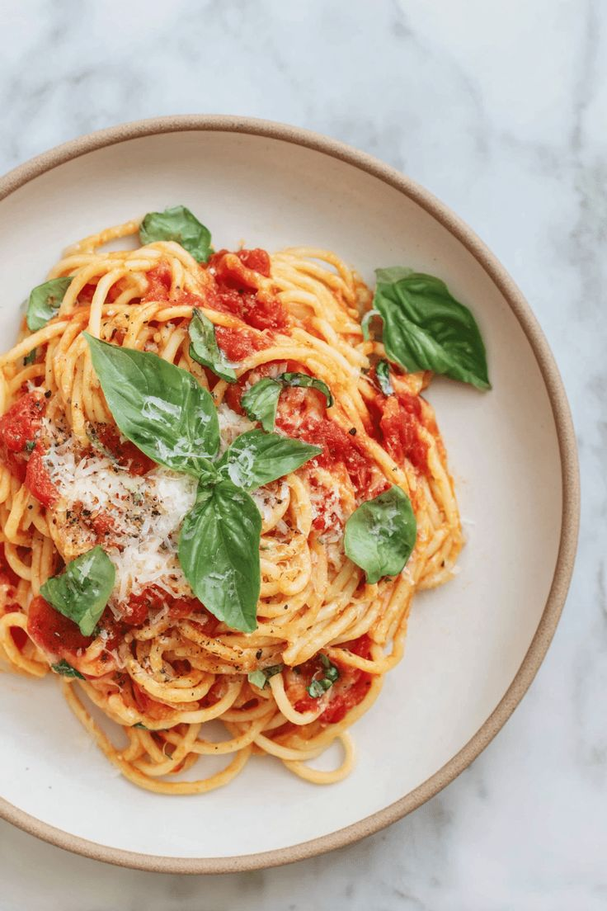

Espaguete ao sugo com manjericão
30 minutos · serve 4Um clássico que depende de poucos ingredientes bem tratados. O segredo é deixar o molho apurar devagar e finalizar a massa na própria panela.
- 400 g de espaguete
- 6 tomates maduros ou 1 lata de tomate pelado
- 3 dentes de alho e azeite
- Folhas de manjericão fresco e sal

Risoto de limão siciliano
40 minutos · serve 4Cremoso e perfumado. Mexer com calma e adicionar o caldo quente aos poucos faz o arroz soltar o amido.
- Refogue cebola na manteiga e sele o arroz arbóreo
- Junte vinho branco e deixe evaporar
- Adicione caldo quente, uma concha por vez
- Finalize com raspas de limão e parmesão

Bolo de fubá cremoso
50 minutos · serve 8Receita de café da tarde, feita no liquidificador. A massa fica úmida e o sabor lembra casa de interior.
- 2 xícaras de leite e 1 xícara de fubá
- 3 ovos e 1 xícara de açúcar
- ½ xícara de óleo e 1 colher de fermento
- Asse a 180 °C até dourar